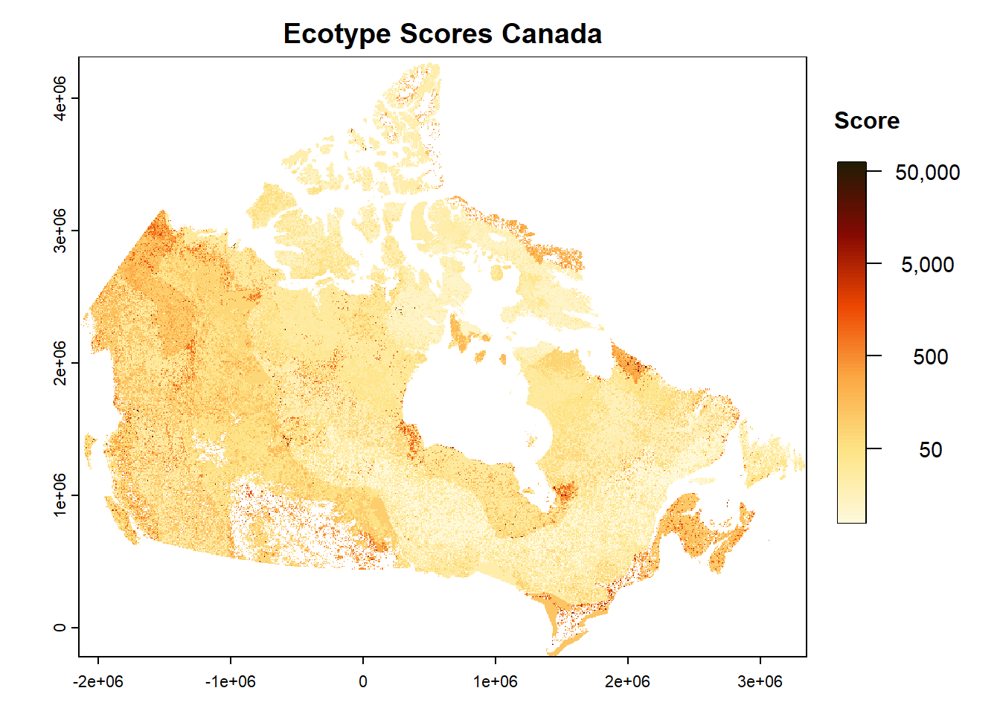
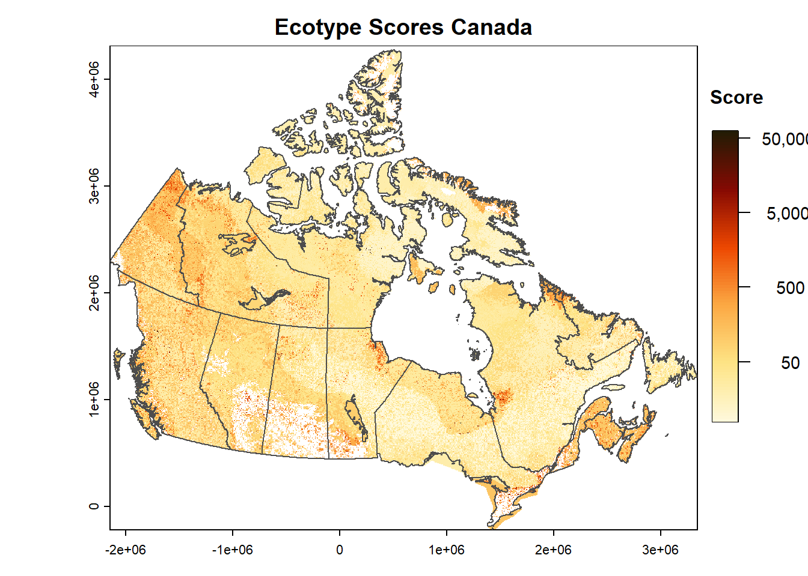
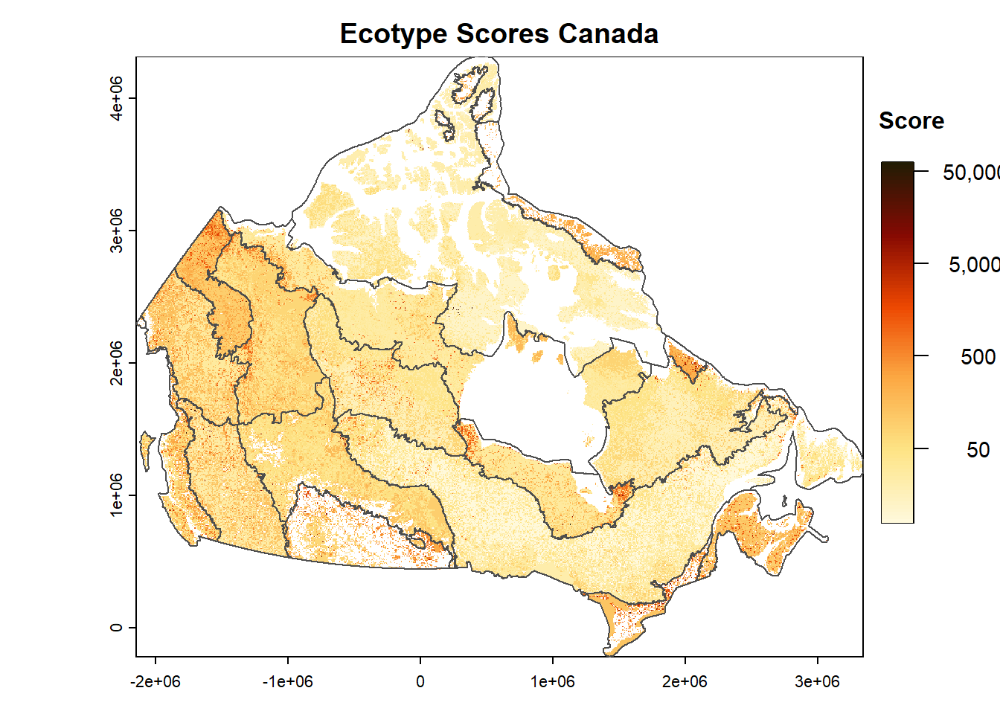

library(terra)
library(fields)
library(rnaturalearth)
library(sf)
library(dplyr)Static Mapping of Ecosystems
Overview
This section visualizes ecotype scores using log-transformed rasters. Two types of ecotype maps are produced:
- National Map: Canada with all ecotypes and ecozones
- Ecotype Maps: Individual maps for each ecotype
Inputs
outputs/ecozone_rasters/mosaic/Canada_Ecozone_Score_Mosaic_LOG10.rds: Log-transformed raster mosaic of all ecotypes.data/Ecozones/ecozones.shp: Ecozone shapefile (vector outlines).outputs/Reclassified by Ecotype/Reclassified_By_Ecotype/: Individual ecotype rasters (log-transformed).outputs/Ecotype_Scores_Scaled_Final.csv: Reference scores used for generating legend labels.
Load Libraries
National Ecotype Map
The following map shows log-transformed ecotype scores across Canada, scaled to a 1km² project area.
- Raster colors represent log₁₀ scores to increase contrast between scores.
- Legend labels are displayed in the original score scale for better readability.
Base Plot
# Load raster
log_raster <- readRDS("outputs/ecozone_rasters/mosaic/Canada_Ecozone_Score_Mosaic_LOG10.rds")
# Get log min and max
log_range <- minmax(log_raster)
log_min <- log_range["min", 1]
log_max <- log_range["max", 1]
# Define custom color palette
my_colors <- c("#fff9db", "#fee485", "#fca944", "#ed4801", "#860a03", "#221c05")
custom_palette <- colorRampPalette(my_colors)(100)
# Set margins and plot
par(oma = c(0, 0, 0, 4))
plot(log_raster, col = custom_palette, legend = FALSE, main = "Ecotype Scores Canada")
# Set breaks for legend
label_ticks_orig <- c(5, 50, 500, 5000, 50000)
label_ticks_log <- log10(label_ticks_orig)
# Add legend with original scores
image.plot(legend.only = TRUE,
zlim = c(log_min, log_max),
col = custom_palette,
legend.width = 1.5,
legend.shrink = 0.8,
legend.mar =1,
axis.args = list(at = label_ticks_log,
labels = format(label_ticks_orig, big.mark = ","),
cex.axis = 0.9,
las = 1),
legend.args = list(text = "Score",
side = 3,
font = 2,
line = 1,
adj = 0.1))
Add Canada or Ecozone Outline
Note: When using add = TRUE, layers are drawn on top of an existing plot. If you want to display just one overlay (e.g., the Canada outline) by itself, you must re-plot the base raster first, since add = TRUE does not create a new plot.
# Add outline of Canada
canada <- ne_states(country = "Canada", returnclass = "sf")
canada_transformed <- st_transform(canada, crs(log_raster))
plot(log_raster, col = custom_palette, legend = FALSE, main = "Ecotype Scores Canada")
plot(st_geometry(canada_transformed), add = TRUE, border = "grey30", lwd = 1)
# Add legend with original scores rather than log scores
image.plot(legend.only = TRUE,
zlim = c(log_min, log_max),
col = custom_palette,
legend.width = 1.5,
legend.shrink = 0.8,
legend.mar =4,
axis.args = list(at = label_ticks_log,
labels = format(label_ticks_orig, big.mark = ","),
cex.axis = 0.9,
las = 1),
legend.args = list(text = "Score",
side = 3,
font = 2,
line = 1,
adj = 0.1))
# Add ecozones outlines
ecozones <- st_read("data/Ecozones/ecozones.shp", quiet = TRUE)
ecozones <- st_transform(ecozones, crs(log_raster))
plot(log_raster, col = custom_palette, legend = FALSE, main = "Ecotype Scores Canada")
plot(ecozones$geometry, add = TRUE, border = "grey30", lwd = 1)
# Add legend with original scores rather than log scores
image.plot(legend.only = TRUE,
zlim = c(log_min, log_max),
col = custom_palette,
legend.width = 1.5,
legend.shrink = 0.8,
legend.mar =4,
axis.args = list(at = label_ticks_log,
labels = format(label_ticks_orig, big.mark = ","),
cex.axis = 0.9,
las = 1),
legend.args = list(text = "Score",
side = 3,
font = 2,
line = 1,
adj = 0.1))

Ecotype Mapping: Individual Ecotypes
The code below generates seven individual ecotype maps. While not all ecotypes are shown, the workflow can be easily reproduced for any other ecotype as needed.
Ecotypes included in this example:
- Barren Lands
- Temperate or Sub-polar Grasslands
- Temperate of Sub-polar Needleleaf Forest
- Mixed Forest
- Temperate of Sub-polar Broadleaf Deciduous Forest
- Water
- Wetland
Function for Pretty Breaks
# Create function for nice breaks on legend
generate_pretty_log_breaks <- function(min_val, max_val, n = 5) {
log_min <- log10(min_val)
log_max <- log10(max_val)
log_breaks <- seq(log_min, log_max, length.out = n)
# Convert back to original scale
raw_breaks <- 10^log_breaks
# Round the breaks to "nice" numbers
rounded_breaks <- sapply(raw_breaks, function(x) {
if (x < 100) {
round(x, -1)
} else if (x < 1000) {
round(x, -2)
} else if (x < 10000) {
round(x, -2)
} else {
round(x, -3)
}
})
rounded_breaks <- sort(unique(rounded_breaks))
return(rounded_breaks)
}Sample Code: Barren Lands
# Load raster
ecotype <- terra::rast("outputs/Reclassified by Ecotype/Reclassified_By_Ecotype/Reclassified_Barren_Lands_log.tif")
# Load Canada outline
canada <- ne_states(country = "Canada", returnclass = "sf")
canada_transformed <- st_transform(canada, crs(ecotype))
# Load ecozone outline
ecozones <- st_read("data/Ecozones/ecozones.shp", quiet = TRUE)
ecozones <- st_transform(ecozones, crs(ecotype))
# Find log min and max
log_range <- minmax(ecotype)
log_min <- log_range["min", 1]
log_max <- log_range["max", 1]
# Define color palette
my_colors <- c("#fee485", "#ed4801", "#860a03", "#221c05")
custom_palette <- colorRampPalette(my_colors)(100)
# Plot
par(mar = c(4, 2, 4, 6)) # Margins
plot(st_geometry(ecozones), col = NA, border = NA, main = "Barren Lands",
xlab = NA, ylab = NA, axes = TRUE) # Base plot
plot(st_geometry(canada_transformed), col = "gray97", border = NA, add = TRUE) # Base for NA values
plot(ecotype, col = custom_palette, legend = FALSE, main = "Barren Lands", add = TRUE) #Ecotype plot
plot(st_geometry(canada_transformed), add = TRUE, border = "grey30", lwd = 0.2)
plot(ecozones$geometry, add = TRUE, border = "grey30", lwd = 0.75)
# Create legend based on score table
scores_df <- read.csv("outputs/Ecotype_Scores_Scaled_Final.csv")
filtered_scores <- scores_df %>%
filter(Ecotype == "Barren lands")
min_score <- min(filtered_scores$Score, na.rm = TRUE)
max_score <- max(filtered_scores$Score, na.rm = TRUE)
label_ticks_orig <- generate_pretty_log_breaks(min_score, max_score, 5)
label_ticks_log <- log10(label_ticks_orig + 1)
# Add legend with original scores rather than log scores
image.plot(legend.only = TRUE,
zlim = c(log_min, log_max),
col = custom_palette,
legend.width = 1.5,
legend.shrink = 0.8,
legend.mar = 4.5,
axis.args = list(at = label_ticks_log,
labels = format(label_ticks_orig, big.mark = ","),
cex.axis = 0.9,
las = 1),
legend.args = list(text = "Score",
side = 3,
font = 2,
line = 1,
adj = 0.1))Other Ecotypes: Maps
The same workflow was applied to produce static maps for the other six ecotypes:
- Temperate or Sub-polar Grasslands
- Temperate or Sub-polar Needleleaf Forest
- Mixed Forest
- Temperate or Sub-polar Broadleaf Deciduous Forest
- Water
- Wetland
Each map uses:
- Log₁₀-scaled raster for visual clarity
- Ecozone and Canada outline
- Legends in original score scale
Raw code for each ecozone is available on GitHub.
Outputs
Ecotype_scores.pdf: no outlinesEcotype_scores_canada_ecozone_outline.pdf: both Canada and ecozone outlinesEcotype_scores_ecozone_outline.pdf: ecozone outlineEcotype_scores_canada.pdf: Canada outlineWater.pdfTemperate or Sub-polar Broadleaf Deciduous Forest.pdfTemperate of Sub-polar Needleleaf Forest.pdfWetland.pdfMixed Forest.pdfBarren Lands.pdfTemperate or Sub-polar Grasslands.pdf